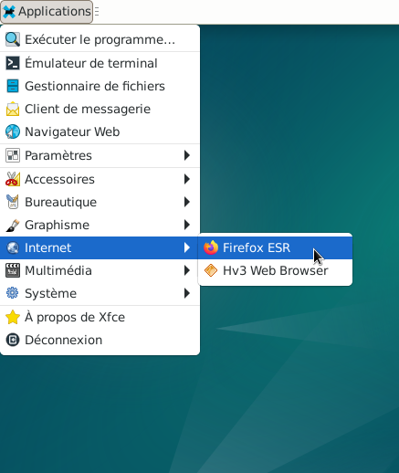
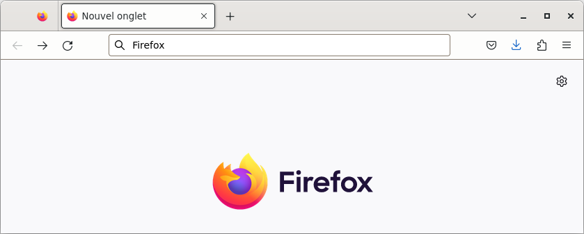
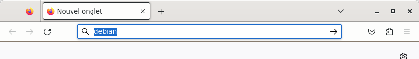
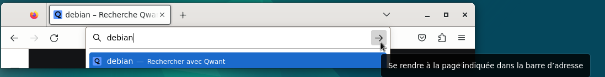
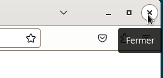

&
Naviguer sur internet avec Firefox : Le site Mozilla / Firefox
Le navigateur Firefox est installé par défaut sur Debian avec le bureau Xfce
La version installée est la version : Firefox ESR (Extended Support Release), plus d'information
ici.
Qu'est ce qu'un navigateur web?
Avant de se rendre sur internet, il est préférable de configurer un pare-feu.
Si besoin, se rendre au chapitre : Les Applications > Le pare-feu avec l'interface utilisateur graphique
gufw





Pour plus d'informations sur les
suggestions de recherche dans Firefox
Et aussi
Firefox Assistance
Site officiel : Mozilla / Firefox

Informations sur le logiciel libre et Merci.
Marques déposées :
Ce site ne fait pas partie de Debian, n'est pas produit par le projet
Debian, ni approuvé par le projet Debian.
Ce site n'est pas affilié à Debian. Debian est une marque déposée appartenant
à Software in the Public Interest, Inc.
Contribuer :
Ce site ne fait pas partie de XFCE, n'est pas produit par le projet
XFCE, ni approuvé par le projet XFCE.
Ce site n'est pas affilié à XFCE.
Ce site est juste réalisé par un passionné.